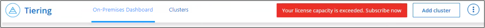

Inizia subito
Inizia subito
Impostare le licenze per il tiering BlueXP
 Suggerisci modifiche
Suggerisci modifiche
Una versione di prova gratuita di 30 giorni del tiering BlueXP inizia quando si imposta il tiering dal primo cluster. Al termine della prova gratuita, dovrai pagare il tiering BlueXP tramite un abbonamento pay-as-you-go o annuale dal mercato del tuo cloud provider, una licenza BYOL di NetApp o una combinazione di entrambi.
Alcune note prima di leggere ulteriori informazioni:
-
Se hai già sottoscritto l'abbonamento BlueXP (PAYGO) nel mercato del tuo cloud provider, sei automaticamente iscritto al tiering BlueXP anche per i sistemi ONTAP on-premise. Verrà visualizzato un abbonamento attivo nella scheda BlueXP Tiering on-premise dashboard. Non dovrai più iscriverti. Nel portafoglio digitale BlueXP viene visualizzato un abbonamento attivo.
-
La licenza di tiering BYOL BlueXP (precedentemente nota come licenza "Cloud Tiering") è una licenza floating che è possibile utilizzare in più cluster ONTAP on-premise nel proprio account BlueXP. Si tratta di un'operazione diversa (e molto più semplice) rispetto al passato in cui è stata acquistata una licenza FabricPool per ciascun cluster.
-
Non sono previsti costi per il tiering dei dati a StorageGRID, pertanto non è richiesta alcuna licenza BYOL o registrazione PAYGO. Questi dati a più livelli non vengono conteggiati in relazione alla capacità acquistata nella licenza.
30 giorni di prova gratuita
Se non si dispone di una licenza di tiering BlueXP, una versione di prova gratuita di 30 giorni del tiering BlueXP inizia quando si imposta il tiering sul primo cluster. Al termine della prova gratuita di 30 giorni, dovrai pagare il tiering BlueXP tramite un abbonamento pay-as-you-go, un abbonamento annuale, una licenza BYOL o una combinazione.
Se la versione di prova gratuita termina e non hai sottoscritto o aggiunto una licenza, ONTAP non esegue più il Tier dei dati cold sullo storage a oggetti. Tutti i dati su più livelli in precedenza rimangono accessibili, il che significa che è possibile recuperare e utilizzare questi dati. Una volta recuperati, questi dati vengono spostati di nuovo nel Tier di performance dal cloud.
Utilizza un abbonamento A BLUEXP Tiering PAYGO
Gli abbonamenti pay-as-you-go dal mercato del tuo cloud provider ti consentono di concedere in licenza l'utilizzo dei sistemi Cloud Volumes ONTAP e di molti servizi dati cloud, come il tiering BlueXP.
Iscrizione a AWS Marketplace
Iscriviti a BlueXP Tiering da AWS Marketplace per impostare un abbonamento pay-as-you-go per il tiering dei dati dai cluster ONTAP ad AWS S3.
-
In BlueXP, fare clic su Mobility > Tiering > on-premise Dashboard.
-
Nella sezione abbonamenti Marketplace, fare clic su Iscriviti sotto Amazon Web Services, quindi fare clic su continua.
-
Iscriviti alla "Mercato AWS", Quindi accedere nuovamente al sito Web di BlueXP per completare la registrazione.
Il seguente video mostra il processo:
Iscrizione a Azure Marketplace
Iscriviti a BlueXP Tiering da Azure Marketplace per impostare un abbonamento pay-as-you-go per il tiering dei dati dai cluster ONTAP allo storage Azure Blob.
-
In BlueXP, fare clic su Mobility > Tiering > on-premise Dashboard.
-
Nella sezione abbonamenti Marketplace, fare clic su Iscriviti sotto Microsoft Azure, quindi fare clic su continua.
-
Iscriviti alla "Azure Marketplace", Quindi accedere nuovamente al sito Web di BlueXP per completare la registrazione.
Il seguente video mostra il processo:
Iscrizione a Google Cloud Marketplace
Iscriviti al tiering di BlueXP da Google Cloud Marketplace per configurare un abbonamento pay-as-you-go per il tiering dei dati dai cluster ONTAP allo storage Google Cloud.
-
In BlueXP, fare clic su Mobility > Tiering > on-premise Dashboard.
-
Nella sezione abbonamenti Marketplace, fare clic su Iscriviti sotto Google Cloud, quindi fare clic su continua.
-
Iscriviti alla "Google Cloud Marketplace", Quindi accedere nuovamente al sito Web di BlueXP per completare la registrazione.
Il seguente video mostra il processo:
Utilizzare un contratto annuale
Pagare il tiering BlueXP ogni anno acquistando un contratto annuale. I contratti annuali sono disponibili in termini di 1, 2 o 3 anni.
Durante il tiering dei dati inattivi su AWS, puoi sottoscrivere un contratto annuale di "Pagina AWS Marketplace". Se si desidera utilizzare questa opzione, impostare l'abbonamento dalla pagina Marketplace, quindi "Associare l'abbonamento alle credenziali AWS".
Durante il tiering dei dati inattivi in Azure, puoi sottoscrivere un contratto annuale di "Pagina del marketplace di Azure". Se si desidera utilizzare questa opzione, impostare l'abbonamento dalla pagina Marketplace, quindi "Associare l'iscrizione alle credenziali Azure".
Al momento, i contratti annuali non sono supportati in caso di tiering in Google Cloud.
Utilizzare una licenza BlueXP Tiering BYOL
Le licenze Bring-Your-Own di NetApp offrono termini di 1, 2 o 3 anni. La licenza BYOL BlueXP Tiering (precedentemente nota come licenza "Cloud Tiering") è una licenza mobile che è possibile utilizzare su più cluster ONTAP on-premise nel proprio account BlueXP. La capacità di tiering totale definita nella licenza di tiering BlueXP è condivisa tra tutti i cluster on-premise, semplificando il rinnovo e la licenza iniziale. La capacità minima per una licenza BYOL tiering inizia a 10 TIB.
Se non disponi di una licenza di tiering BlueXP, contattaci per acquistarne una:
-
Mailto:ng-cloud-tiering@netapp.com?subject=Licensing[Invia e-mail per acquistare una licenza].
-
Fare clic sull'icona della chat nell'angolo inferiore destro di BlueXP per richiedere una licenza.
Se si dispone di una licenza basata su nodo non assegnata per Cloud Volumes ONTAP che non si intende utilizzare, è possibile convertirla in una licenza di tiering BlueXP con la stessa equivalenza in dollari e la stessa data di scadenza. "Fai clic qui per ulteriori informazioni".
La pagina del portafoglio digitale BlueXP consente di gestire le licenze BYOL di tiering BlueXP. È possibile aggiungere nuove licenze e aggiornare quelle esistenti.
BlueXP Tiering BYOL licensing a partire dal 2021
La nuova licenza BlueXP Tiering è stata introdotta nell'agosto 2021 per le configurazioni di tiering supportate in BlueXP utilizzando il servizio di tiering BlueXP. Attualmente BlueXP supporta il tiering per i seguenti storage cloud: Amazon S3, Azure Blob, Google Cloud Storage, NetApp StorageGRID e lo storage a oggetti compatibile con S3.
La licenza FabricPool utilizzata in passato per il Tier dei dati ONTAP on-premise nel cloud viene conservata solo per le implementazioni ONTAP in siti che non dispongono di accesso a Internet (noti anche come "siti oscuri") e per il tiering delle configurazioni per lo storage a oggetti cloud IBM. Se si utilizza questo tipo di configurazione, si installerà una licenza FabricPool su ciascun cluster utilizzando Gestione di sistema o l'interfaccia utente di ONTAP.

|
Tenere presente che il tiering a StorageGRID non richiede una licenza di tiering FabricPool o BlueXP. |
Se si utilizza la licenza FabricPool, non si è interessati fino a quando la licenza FabricPool non raggiunge la data di scadenza o la capacità massima. Contatta NetApp quando hai bisogno di aggiornare la licenza o prima per assicurarti che non ci siano interruzioni nella tua capacità di tiering dei dati nel cloud.
-
Se si utilizza una configurazione supportata in BlueXP, le licenze FabricPool verranno convertite in licenze di tiering BlueXP e verranno visualizzate nel portafoglio digitale BlueXP. Una volta scadute le licenze iniziali, sarà necessario aggiornare le licenze di tiering BlueXP.
-
Se si utilizza una configurazione non supportata in BlueXP, continuare a utilizzare una licenza FabricPool. "Scopri come eseguire il tiering delle licenze con System Manager".
Di seguito sono riportate alcune informazioni sulle due licenze:
| Licenza di tiering BlueXP | Licenza FabricPool |
|---|---|
Si tratta di una licenza mobile utilizzabile su più cluster ONTAP on-premise. |
Si tratta di una licenza per cluster acquistata e concessa in licenza per every cluster. |
È registrato nel portafoglio digitale BlueXP. |
Viene applicato a singoli cluster utilizzando Gestore di sistema o l'interfaccia utente di ONTAP. |
La configurazione e la gestione del tiering vengono eseguite tramite il servizio di tiering BlueXP in BlueXP. |
La configurazione e la gestione del tiering vengono eseguite tramite Gestore di sistema o l'interfaccia CLI di ONTAP. |
Una volta configurato, è possibile utilizzare il servizio di tiering senza licenza per 30 giorni utilizzando la versione di prova gratuita. |
Una volta configurato, è possibile eseguire il Tier dei primi 10 TB di dati gratuitamente. |
Ottenere il file di licenza per il tiering BlueXP
Dopo aver acquistato la licenza di tiering BlueXP, si attiva la licenza in BlueXP inserendo il numero di serie del tiering BlueXP e l'account NSS o caricando il file di licenza NLF. Se si prevede di utilizzare questo metodo, la procedura riportata di seguito mostra come ottenere il file di licenza NLF.
Prima di iniziare, è necessario disporre delle seguenti informazioni:
-
Numero di serie del tiering di BlueXP
Individua questo numero nell'ordine di vendita o contatta l'account team per ottenere queste informazioni.
-
ID account BlueXP
Puoi trovare il tuo ID account BlueXP selezionando l'elenco a discesa account nella parte superiore di BlueXP, quindi facendo clic su Gestisci account accanto all'account. L'ID account si trova nella scheda Panoramica.
-
Accedere a "Sito di supporto NetApp" E fare clic su sistemi > licenze software.
-
Inserire il numero di serie della licenza di tiering BlueXP.

-
Nella colonna chiave di licenza, fare clic su Ottieni file di licenza NetApp.
-
Inserire l'ID account BlueXP (chiamato ID tenant sul sito di supporto) e fare clic su Submit (Invia) per scaricare il file di licenza.

Aggiungi le licenze BlueXP Tiering BYOL al tuo account
Dopo aver acquistato una licenza di tiering BlueXP per l'account BlueXP, è necessario aggiungere la licenza a BlueXP per utilizzare il servizio di tiering BlueXP.
-
Fare clic su Governance > Digital wallet > licenze servizi dati.
-
Fare clic su Aggiungi licenza.
-
Nella finestra di dialogo Add License, inserire le informazioni sulla licenza e fare clic su Add License:
-
Se si dispone del numero di serie della licenza di tiering e si conosce l'account NSS, selezionare l'opzione inserire il numero di serie e immettere le informazioni desiderate.
Se il tuo account NetApp Support Site non è disponibile nell'elenco a discesa, "Aggiungere l'account NSS a BlueXP".
-
Se si dispone del file di licenza di tiering, selezionare l'opzione Upload License file (carica file di licenza) e seguire le istruzioni per allegare il file.

-
BlueXP aggiunge la licenza in modo che il servizio di tiering BlueXP sia attivo.
Aggiornare una licenza BlueXP Tiering BYOL
Se la durata della licenza è prossima alla data di scadenza, o se la capacità concessa in licenza sta raggiungendo il limite, verrà inviata una notifica in BlueXP Tiering.

Questo stato viene visualizzato anche nella pagina del portafoglio digitale BlueXP.

Puoi aggiornare la tua licenza di tiering BlueXP prima della scadenza, in modo da non interrompere la tua capacità di tiering dei dati nel cloud.
-
Fare clic sull'icona della chat nell'angolo inferiore destro di BlueXP per richiedere un'estensione del termine o una capacità aggiuntiva della licenza di tiering BlueXP per il numero di serie specifico.
Dopo aver pagato la licenza e averla registrata nel NetApp Support Site, BlueXP aggiorna automaticamente la licenza nel portafoglio digitale BlueXP e la pagina licenze servizi dati rifletterà la modifica tra 5 e 10 minuti.
-
Se BlueXP non riesce ad aggiornare automaticamente la licenza, sarà necessario caricare manualmente il file di licenza.
-
È possibile Ottenere il file di licenza dal NetApp Support Site.
-
Nella pagina del portafoglio digitale BlueXP della scheda licenze servizi dati, fare clic su
 Per il numero di serie del servizio che si sta aggiornando, fare clic su Aggiorna licenza.
Per il numero di serie del servizio che si sta aggiornando, fare clic su Aggiorna licenza.
-
Nella pagina Update License, caricare il file di licenza e fare clic su Update License (Aggiorna licenza).
-
BlueXP aggiorna la licenza in modo che il servizio di tiering BlueXP continui ad essere attivo.
Applicare le licenze di tiering BlueXP ai cluster in configurazioni speciali
I cluster ONTAP nelle seguenti configurazioni possono utilizzare le licenze di tiering BlueXP, ma la licenza deve essere applicata in modo diverso rispetto ai cluster a nodo singolo, ai cluster configurati in ha, ai cluster nelle configurazioni di mirror di tiering e alle configurazioni MetroCluster che utilizzano il mirror di FabricPool:
-
Cluster a più livelli per IBM Cloud Object Storage
-
Cluster installati in "siti oscuri"
Processo per i cluster esistenti che dispongono di una licenza FabricPool
Quando vuoi "Scopri uno di questi tipi di cluster speciali in BlueXP Tiering", BlueXP Tiering riconosce la licenza FabricPool e la aggiunge al portafoglio digitale BlueXP. Questi cluster continueranno a tiering dei dati come al solito. Alla scadenza della licenza FabricPool, è necessario acquistare una licenza di tiering BlueXP.
Processo per i cluster appena creati
Quando si scoprono cluster tipici in BlueXP Tiering, si configurerà il tiering utilizzando l'interfaccia di tiering BlueXP. In questi casi si verificano le seguenti azioni:
-
La licenza di tiering BlueXP "padre" tiene traccia della capacità utilizzata per il tiering da tutti i cluster per garantire che la licenza disponga di capacità sufficiente. La capacità totale concessa in licenza e la data di scadenza sono indicate nel portafoglio digitale BlueXP.
-
Una licenza di tiering "figlio" viene automaticamente installata su ciascun cluster per comunicare con la licenza "padre".

|
La capacità concessa in licenza e la data di scadenza mostrate in Gestore di sistema o nell'interfaccia CLI di ONTAP per la licenza "figlio" non sono le informazioni reali, quindi non preoccuparti se le informazioni non sono le stesse. Questi valori sono gestiti internamente dal software di tiering BlueXP. Le informazioni reali vengono registrate nel portafoglio digitale BlueXP. |
Per le due configurazioni elencate in precedenza, è necessario configurare il tiering utilizzando Gestione di sistema o l'interfaccia CLI di ONTAP (non utilizzando l'interfaccia di tiering BlueXP). Quindi, in questi casi, è necessario trasferire manualmente la licenza "figlio" a questi cluster dall'interfaccia di tiering BlueXP.
Si noti che, poiché i dati vengono suddivisi in due diverse posizioni di storage a oggetti per le configurazioni di Tiering Mirror, sarà necessario acquistare una licenza con capacità sufficiente per il tiering dei dati in entrambe le posizioni.
-
Installare e configurare i cluster ONTAP utilizzando Gestione di sistema o l'interfaccia utente di ONTAP.
Non configurare il tiering a questo punto.
-
"Acquistare una licenza di tiering BlueXP" per la capacità necessaria per il nuovo cluster o cluster.
-
In BlueXP, "Aggiungere la licenza al portafoglio digitale BlueXP".
-
Nel tiering BlueXP, "scopri i nuovi cluster".
-
Nella pagina Clusters, fare clic su
Per il cluster e selezionare Deploy License.
-
Nella finestra di dialogo Deploy License, fare clic su Deploy.
La licenza secondaria viene implementata nel cluster ONTAP.
-
Tornare a Gestore di sistema o all'interfaccia utente di ONTAP e configurare la configurazione del tiering.